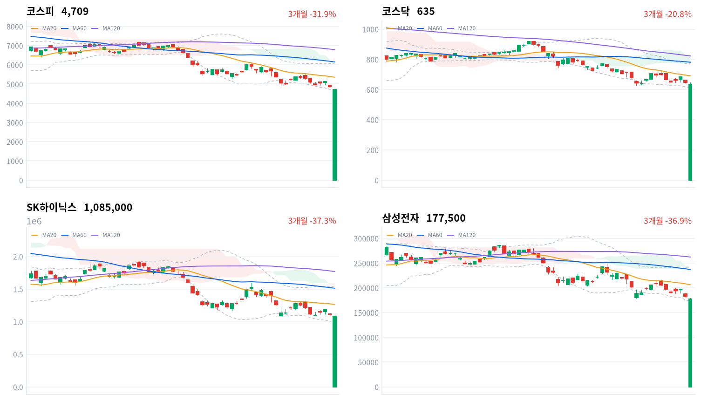

나스닥이 5.28% 급락한 뒤 열린 코스피는 정오 무렵 4,586.80까지 밀렸다가 낙폭을 줄여 마감했다. 삼성전자와 SK하이닉스는 지수보다 덜 내렸고, 낙폭은 데이터센터와 엮인 건설·IT서비스와 플랫폼에서 컸다.
외국인은 2,340억원을 순매도해(당일 잠정) 7거래일째 팔았지만 규모는 직전 거래일의 5분의 1 수준으로 줄었다. AI 투자 의문이 반도체 밖 데이터센터 관련 업종으로 번졌는지는 11월 30일 종가까지 현대건설과 코스피의 수익률 차로 확인한다.
미국 반도체주가 폭락한 뒤 처음 열린 한국 정규장에서 낙폭은 반도체가 아니라 그 바깥에서 컸다. 삼성전자(-3.06%)와 SK하이닉스(-2.52%)는 지수보다 덜 내렸고, 건설(GS건설 -12.57%, 현대건설 -8.80%)과 IT서비스(삼성에스디에스 -15.42%, LG씨엔에스 -13.93%), 플랫폼(NAVER -7.18%)이 두세 배 크게 내렸다. 외국인 순매도는 직전 거래일 1조956억원에서 2,340억원(당일 잠정)으로 줄었는데도 지수는 3% 넘게 빠졌다.
장 마감 뒤 보도는 미국 반도체 급락의 여파를 앞세우고 엔비디아 회계 조사 보도, AI 투자 수익성 우려, 미국 수출통제 불확실성을 배경으로 들었다. 재료 목록에는 동의한다. 다만 이 설명은 하락 전체를 반도체 급락의 연장으로 묶어, 반도체 대형주가 지수보다 덜 내리고 데이터센터 일감에 기대를 걸었던 업종이 더 크게 내린 차이를 설명하지 않는다. 건설주 약세에는 미국 상원이 11월 19일(현지) 대형 데이터센터 사업자에게 신규 전력·전력망 비용을 지우는 법안(BAAJA)을 통과시켜 데이터센터 건설·가동 일정이 늦어질 수 있다는 보도가 따로 붙었다. 지수 하단을 두고는 증권사도 여지를 남겼다. 키움증권 한지영 연구원은 AI산업 불안과 연계된 이익 불신이라는 근본 불안이 남아 있어 워스트 시나리오에 대비해 선행 PBR 0.8배 수준인 4,200~4,300pt까지는 열어둬야 한다고 봤다. 외국인이 앞으로 얼마나 더 팔지, 국내 건설사의 데이터센터 매출 감소를 시장이 얼마로 값을 매겼는지 보여 줄 옵션·선물이나 이익 추정 자료는 없다.
우리는 오늘 하락을 미국 반도체 급락의 시차 반영만으로 보지 않는다. AI 투자 수익성 의문이 반도체에서, 데이터센터 착공·운영으로 이익 기대를 얹었던 건설·IT서비스·플랫폼으로 번졌고, 건설에는 미국 법안이라는 새 재료가 할인으로 붙었다고 본다. 다른 설명은 반도체 급락 날 그동안 AI 기대로 오른 변동성 큰 종목이 하루 더 크게 팔렸을 뿐이고, 법안은 상원 통과 단계라 국내 수주에 닿는 경로는 아직 없다는 것이다. 두 설명은 앞으로 5거래일의 상대 성과에서 다른 결과를 낸다. 할인이라면 건설주는 지수보다 계속 약하고, 하루 위험 축소라면 지수보다 크게 되돌린다. 11월 23일 KRX 종가(현대건설 66,300원, 코스피 4,708.54) 대비 11월 30일 KRX 종가 기준 현대건설 수익률이 코스피 수익률보다 3%포인트 넘게 낮으면 데이터센터 할인 해석을 뒷받침하고, 3%포인트 넘게 높으면 하루 위험 축소를 우선 설명으로 보고 철회한다. 시장 전체의 투자자별 순매수만 있고 업종별 순매매 자료는 없어, 어느 주체가 건설·IT서비스를 팔았는지는 가리지 못한다.
새로 제안할 상품은 없다. 반도체·AI 하드웨어 업종은 지수보다 덜 내렸지만, 하루 상대 강세만으로 가격 흐름이 돌아섰다고 보기는 이르다. 오히려 약세가 데이터센터 주변 업종으로 번져 AI 인프라 테마 전체의 가격 흐름은 더 약해졌다. 정부가 준비를 밝힌 증권시장안정펀드는 집행 시점과 규모가 나오기 전까지 실제 매수 주체로 셈하기 어렵다. 가장 가까운 결정적 일정은 11월 24일 정규장이다. 외국인 코스피 순매도가 8거래일째로 이어지는지, 자사주 매수주문 특례가 시행되는 첫날 취득 공시가 늘어나는지를 기다린다.
코스피가 11월 23일 기준 일목 전환선 5,046 위에서 마감하면 AI 투자 의문에 따른 재평가가 데이터센터 주변 업종으로 번지며 이어진다는 판단을 철회하고, 과매도 뒤 기술적 반등이 시작됐다는 설명을 우선 설명으로 본다.
출처: 라이센스뉴스, 파이낸스투데이, 뉴스1, 비즈니스포스트
11월 20일 미국 정규장에서 나스닥은 5.28%, S&P 500은 3.70%, 다우는 1.93% 내렸다. 23일 아시아는 엇갈렸다. 대만가권은 2.16% 올랐고 항셍(-0.12%)과 상해종합(+0.15%)은 거의 움직이지 않았으며, 일본은 휴장했다. 문을 연 아시아 지수 가운데 코스피가 가장 크게 내렸다. 대만은 11월 20일에 먼저 크게 빠졌고, 주말 사이 공매도 제한·담보비율 상향 등 시장안정 조치와 국가금융안정기금을 내놓았다는 보도가 나왔다.
코스피는 4,734.90으로 시작해 전일 종가 4,869.96보다 2.77% 낮게 열렸다. 한국 정규장 동안 S&P 500 선물은 0.07% 올랐고 나스닥100 선물은 보합이어서, 장중 추가 하락을 미국 선물이 끌지는 않았다.
코스피는 오전에 밀려 정오 무렵 4,586.80까지 내려갔고, 오후에 되올라 4,708.54로 마감했다. 종가는 하루 범위의 위쪽 3분의 1 안에 있다. 11월 20일에 이어 2거래일 연속 매도 사이드카가 발동됐다는 보도가 나왔다. 코스닥은 618.74까지 밀렸다가 오후 한때 전일 종가 위인 645.93까지 올랐으나 635.45로 끝났다. 원/달러는 오후에 올랐다가 장 막판 상승폭을 일부 되돌렸다.
미국 반도체 급락이 출발점이었지만 업종 낙폭은 데이터센터와 엮인 건설·IT서비스, 플랫폼, 은행·보험에서 컸다. 외국인과 개인이 코스피를 팔았고 기관만 샀다. 화장품은 한중 FTA 후속협상 재료로 지수와 반대로 올랐다.
출처: 파이낸스투데이, 디지털타임스
코스피는 3.31% 내린 4,708.54, 코스닥은 1.58% 내린 635.45로 마감했다. 코스피는 11월 19일 종가 5,137.89에서 두 거래일 만에 8.36% 내렸다. 코스닥 낙폭은 코스피의 절반에 그쳤다.
| 지수 | 종가 | 등락률 | 시가 | 고가 | 저가 | 전일 종가 |
|---|---|---|---|---|---|---|
| 코스피 | 4,708.54 | -3.31% | 4,734.90 | 4,759.88 | 4,586.80 | 4,869.96 |
| 코스닥 | 635.45 | -1.58% | 634.93 | 645.93 | 618.74 | 645.68 |
| 주체 | 순매수(억원) |
|---|---|
| 개인 | -3,743 |
| 외국인 | -2,340 |
| 기관 | +1,811 |
| 주체 | 순매수(억원) |
|---|---|
| 개인 | -1,730 |
| 외국인 | -345 |
| 기관 | +1,956 |
외국인 매도는 이어졌지만 규모는 크게 줄었다. 외국인은 코스피를 2,340억원 순매도해(전일 1조956억원 순매도, 당일 잠정) 11월 13일부터 7거래일째 팔았다. 매도 규모가 직전 거래일의 5분의 1 수준으로 줄었는데도 지수 낙폭은 3%를 넘어, 이날 낙폭의 크기를 외국인 매도 규모만으로 설명하기는 어렵다.
개인은 3,743억원을 순매도해(전일 1조5,381억원 순매수) 직전 거래일의 대규모 매수에서 매도로 돌아섰다. 기관은 1,811억원을 순매수해(전일 9,330억원 순매도) 세 주체 가운데 유일하게 샀다. 개인의 매도 전환이 낙폭을 키웠을 수 있지만, 업종별 순매매 자료가 없어 개인과 외국인이 어느 업종을 팔았는지는 가리지 못한다.
코스닥에서는 기관이 1,956억원을 순매수해(전일 1,065억원 순매도) 개인 순매도 1,730억원(전일 2,803억원 순매수)과 외국인 순매도 345억원(전일 1,615억원 순매도)을 받았다. 외국인 매도가 줄고 기관이 산 날 코스닥 낙폭은 코스피의 절반에 그쳤다.
장중 누적 수급과 프로그램 매매는 받을 수 있는 자료가 없어 싣지 않는다.
| 순위 | 종목/ETF | 구분 | 거래대금 | 비고 |
|---|---|---|---|---|
| 1 | SK하이닉스 | 개별주 | 4.12조원 | - |
| 2 | 삼성전자 | 개별주 | 3.34조원 | - |
| 3 | 반도체 테마 ETF | 테마·롱 | 1.66조원 | 29종 합산 |
| 4 | 삼성전기 | 개별주 | 0.68조원 | - |
| 5 | 삼성전자우 | 개별주 | 0.56조원 | - |
| 6 | SK스퀘어 | 개별주 | 0.43조원 | - |
| 7 | KODEX CD금리액티브(합성) | 단기금리·현금성 | 0.40조원 | - |
| 8 | 삼성E&A | 개별주 | 0.23조원 | - |
| 9 | NAVER | 개별주 | 0.22조원 | - |
| 10 | 2차전지 테마 ETF | 테마·롱 | 0.21조원 | 14종 합산 |
단위 백만원 원본을 조 단위로 환산했다. 같은 기초자산 ETF는 방향별로, 같은 테마 섹터 ETF는 테마별로 묶고 지수·해외 ETF는 제외했다.
거래는 여전히 반도체에 몰렸다. SK하이닉스(4.12조원)와 삼성전자(3.34조원)가 1·2위, 반도체 테마 ETF 29종 합산(1.66조원)이 3위였고, 거래가 가장 많았던 이 업종의 주가는 지수보다 덜 내렸다. 반도체 밖에서는 낙폭이 컸던 삼성E&A(0.23조원)와 NAVER(0.22조원)가 상위 10에 들었다. 현금성 상품인 KODEX CD금리액티브(0.40조원)도 7위였다. 거래대금은 거래의 양이지 방향이 아니어서, 이 순위만으로 어느 쪽으로 돈이 들어왔는지는 말할 수 없다.
대표 ETF 12개 섹터가 모두 내렸고, 소프트웨어(-7.84%)·건설(-6.48%)·방산(-5.86%)이 가장 크게, 로봇(-1.42%)·반도체(-1.47%)가 가장 작게 내렸다. 1주로 넓히면 건설(-14.67%)·방산(-13.29%)·조선(-12.82%)이 반도체(-7.07%)의 두 배 가까이 내렸다. 건설은 1년 수익률이 아직 +27.56%로 반도체(+39.42%) 다음이어서, 데이터센터 기대로 오른 폭을 되돌릴 여지가 남은 업종이다.
업종 분류로 보면 오른 업종은 전자장비와기기(+1.47%, 105개 중 21개 상승)와 화장품(+0.80%, 64개 중 17개)·통신장비(+0.63%, 55개 중 13개) 정도였고, 오른 종목 비율이 2~3할에 그쳐 일부 종목이 평균을 끌어올린 상승이다. 내린 쪽은 넓었다. 조선(-4.11%)은 31개 중 1개, 석유와가스(-3.57%)는 19개 중 1개, 화학(-3.75%)은 122개 중 10개만 올라 업종 대부분이 함께 내렸다. 반도체와반도체장비는 1.54% 내렸고 175개 중 49개가 올랐다.
반도체 대형주는 2거래일째 내렸지만 지수보다는 덜 내렸다(삼성전자 -3.06%, SK하이닉스 -2.52%). 삼성전자 종가 177,500원은 4월 2일 이후 약 7개월 만에 18만원 아래이고, 두 종목 모두 장중 6% 넘게 밀렸다가 오후에 낙폭을 줄였다는 보도가 나왔다. 외국인과 개인이 함께 팔았다는 보도도 있었다.
에이피알은 9.13% 올라 지수와 반대로 움직였다. 한중 FTA 서비스·투자 후속협상 실질 타결 기대에 화장품주가 올랐고, 기관이 에이피알을 약 397억원 순매수했다는 보도가 나왔다. 한국투자증권은 블랙프라이데이 이후 아마존 뷰티 상위 100위 안에 든 에이피알 제품 수가 행사 전의 두 배 가까이 늘었다고 분석했다.
SK스퀘어는 0.44% 올라 지수가 급락한 날 소폭 상승했다. 확인된 재료는 없다.
건설주는 데이터센터 재료로 급락했다(GS건설 -12.57%, 현대건설 -8.80%, 삼성E&A -7.96%, 대우건설 -7.07%). 미국 상원이 11월 19일(현지) 통과시킨 「미국 경제적 부담 완화·일자리 법안」(BAAJA)이 대형 데이터센터 사업자에게 신규 전력 공급·전력망 확충 비용을 지우면서, 데이터센터 건설·가동 일정이 늦어질 수 있다는 우려가 번졌다는 보도가 나왔다. 법안은 상원 통과 단계이고 하원 처리와 서명 여부는 확인되지 않았으며, 국내 건설사 매출에서 데이터센터가 차지하는 비중 자료도 없다. 메모리 업체 쪽에서는 지연을 수요 둔화와 구분하는 설명이 나왔다. J.P. Morgan 홍콩 TIG 컨퍼런스에 나온 삼성전자·SK하이닉스·키옥시아의 설명을 두고는, 수요는 충분하고 데이터센터 지연은 전력 비용 부담 구조의 규제 변화 탓이며 AI 인프라 둔화 신호는 제한적이라는 시각도 있었다.
플랫폼은 크게 내렸다(NAVER -7.18%, 카카오 -6.61%). 원인 보도는 엇갈린다. 데이터센터 투자심리 위축을 든 보도가 있었고, 증권사의 잇단 목표주가 하향과 본업 둔화, AI·커머스 투자 비용 부담을 든 보도도 있었다. 카카오 고유의 재료는 확인되지 않았다.
묶음 밖에서는 IT서비스가 가장 크게 내렸다(삼성에스디에스 -15.42%, LG씨엔에스 -13.93%). 두 종목의 하락을 직접 설명하는 보도는 찾지 못했고, 데이터센터 사업과 연결되는지도 확인되지 않았다. 금융도 약했고(삼성생명 -5.86%, KB금융 -5.71%, 삼성화재 -5.68%, 하나금융지주 -5.33%), 삼성전기(+0.52%)·이수페타시스(+2.3%)·두산(+2.66%)은 올랐다.
출처: 뉴스1, 파이낸셜뉴스, 남도일보, 비즈니스포스트, 이투데이
주가가 3% 넘게 빠진 날 국고채 금리는 소폭 내렸다. 3년물은 1.9bp 내린 3.623%, 10년물은 3.0bp 내린 3.827%였고, 원/달러는 한국장 시간대 마지막 관측이 1,344.18원(15:30)이었다.
| 지표 | 금리 | 전일比(bp) | 기준일 |
|---|---|---|---|
| 국고채 3년 | 3.623% | -1.9 | 2026-11-23 |
| 국고채 10년 | 3.827% | -3.0 | 2026-11-23 |
| CD 91일 | 3.39% | 0.0 | 2026-11-23 |
| 회사채 AA- 3년 | 4.309% | -2.0 | 2026-11-23 |
| 한국은행 기준금리 | 3.00% | 0.0 | 2026년 10월 기준 |
주식 급락이 신용 가격으로 번지지는 않았다. 회사채 AA- 3년물과 국고채 3년물의 금리차는 68.6bp로 하루 새 0.1bp 좁혀져 거의 그대로였다. 다만 수준은 이미 최근 2년(531거래일) 가운데 넓은 쪽 12% 안에 있어, 기업 자금 조달 비용은 주식 급락 이전부터 높은 상태다.
10년물과 3년물의 금리차는 20.4bp로 1.1bp 좁혀졌고, 최근 2년(531거래일) 가운데 좁은 쪽 15% 안에 있다. 장기물이 더 내린 것은 성장 기대를 낮추는 방향과 맞지만, 하루 변화가 작아 채권시장이 주식 급락에 크게 반응했다고 읽기는 어렵다. 3년물과 기준금리의 차는 62.3bp로 최근 2년(531거래일)의 한가운데쯤이며, 이 차에는 정책 경로와 기간프리미엄이 섞여 있다.
11월 23일 금리: 국고채 10년 3.827%, 3년 3.623%, 회사채 AA- 3년 4.309%, 기준금리 3.00%. (3.827 − 3.623) × 100 = 20.4bp, 변화 −3.0 − (−1.9) = −1.1bp. (4.309 − 3.623) × 100 = 68.6bp, 변화 −2.0 − (−1.9) = −0.1bp. (3.623 − 3.00) × 100 = 62.3bp.
| 미국 참조 지수 | 구분 | 관측 | 등락률 | 업종 내 상승 비율 | 기준일 |
|---|---|---|---|---|---|
| 반도체·AI 하드웨어 | 업종 | 반도체와반도체장비 | -1.54% | 28% | 11/23 |
| 반도체·AI 하드웨어 | 종목 | SK하이닉스 | -2.52% | – | 11/23 |
| 반도체·AI 하드웨어 | 종목 | 삼성전자 | -3.06% | – | 11/23 |
| 반도체·AI 하드웨어 | 지수 | 대만가권 | +2.16% | – | 11/23 |
| 전력망 | 업종 | 전기장비 | -0.78% | 20% | 11/23 |
| 전력망 | 업종 | 전기제품 | -2.18% | 18% | 11/23 |
| 전력망 | 종목 | LS ELECTRIC | +0.46% | – | 11/23 |
| 전력망 | 종목 | 효성중공업 | -2.38% | – | 11/23 |
| 방산 | 종목 | 한화에어로스페이스 | -4.96% | – | 11/23 |
| 산업재 | 업종 | 기계 | -0.81% | 39% | 11/23 |
| 산업재 | 업종 | 조선 | -4.11% | 3% | 11/23 |
| 산업재 | 종목 | HD현대중공업 | -3.44% | – | 11/23 |
| 산업재 | 종목 | 한화오션 | -5.23% | – | 11/23 |
| 산업재 | 종목 | 삼성중공업 | -5.09% | – | 11/23 |
| 금속·광업 | 업종 | 철강 | -3.24% | 13% | 11/23 |
| 금속·광업 | 업종 | 비철금속 | -2.13% | 10% | 11/23 |
| 금속·광업 | 종목 | POSCO홀딩스 | -3.77% | – | 11/23 |
| 금융 | 업종 | 증권 | -2.39% | 8% | 11/23 |
| 금융 | 종목 | KB금융 | -5.71% | – | 11/23 |
| 금융 | 종목 | 신한지주 | -4.52% | – | 11/23 |
| 소프트웨어 | 업종 | 소프트웨어 | -0.91% | 22% | 11/23 |
| 소프트웨어 | 종목 | NAVER | -7.18% | – | 11/23 |
| 소프트웨어 | 종목 | 카카오 | -6.61% | – | 11/23 |
| 에너지 | 업종 | 석유와가스 | -3.57% | 5% | 11/23 |
| 에너지 | 종목 | SK이노베이션 | -3.81% | – | 11/23 |
| 일본 | 지수 | 닛케이 | -5.06% | – | 11/20 |
| 중국 | 지수 | 항셍 | -0.12% | – | 11/23 |
| 중국 | 지수 | 상해종합 | +0.15% | – | 11/23 |
원/달러는 한국장 시간대에 1,337.83원(09:00)에서 1,351.48원(13:30)까지 올랐다가 1,344.18원(15:30)에서 마지막으로 관측됐다. 코스피가 3% 넘게 빠진 날에도 장중 폭이 크지 않아, 해외주식의 원화 환산 가치를 크게 흔들 환율 변화는 없었다. 대기 자금의 참고 금리도 움직이지 않아 현금 쪽 판단을 바꿀 변화는 나오지 않았다.
반도체는 미국 매도를 아시아가 하루 더 따라가지 않았다. 미국 반도체주가 급락한 다음 거래일에 한국 반도체와반도체장비 업종은 1.54% 내리는 데 그쳤고 대만가권은 2.16% 올랐다. 소프트웨어는 반대로 한국에서 NAVER(-7.18%)와 카카오(-6.61%)가 크게 내려, AI 투자 비용을 지는 플랫폼 쪽으로 약세가 번졌다. 같은 약세가 미국 정규장의 소프트웨어 업종에서도 나오는지가 미국 소프트웨어 테마를 읽는 데 쓸 관측이다.
금융위원회는 23일 정례회의에서 11월 24일부터 2027년 2월 23일까지 3개월 동안 상장사가 자사주를 직접 취득할 때 신고한 수량 전체를 하루에 주문할 수 있게 했다는 보도가 나왔다. 지금까지는 취득 예정 수량의 10%와 일평균 거래량의 25% 가운데 큰 값, 발행주식의 1%가 하루 상한이었다. 신탁 취득은 1% 상한 대신 신탁재산 총액 범위로 넓혔고, 금융감독원과 거래소는 3개월 동안 불법 공매도를 특별 집중감시한다. 공매도 전면 금지는 아니고 배당가능이익 한도도 그대로다.
주문 한도가 넓어지면 이미 자사주 매입 재원과 결의를 갖춘 기업이 매수를 더 빨리 집행할 수 있을 뿐, 취득 규모 자체가 늘어나는 것은 아니다. 혜택은 현금이 많고 매입 결의가 있는 대형주, 특히 금융지주·지주사에 몰리는데, 이날 금융주는 크게 내려 정책 재료가 가격에 들어간 흔적은 없다. 시행 전날 공시도 나왔다. 한화오션은 임직원 주식보상을 목적으로 2026년 11월 24일부터 2027년 2월 23일까지 240억원 규모의 자기주식을 장내 매수하기로 했고, 임직원 보상용 주식 확보에 초점을 둔 조치라는 시각도 나왔다. 지수 하락을 막는 수단으로는 효과가 제한적이라는 평가가 나왔고, 11월 24일부터 자사주 취득 결의와 공시가 실제로 늘어나는지가 확인할 점이다.
연합인포맥스에 따르면 이형일 부총리 겸 재정경제부 장관은 AI 투자 심리 악화로 글로벌 증시가 급락하자 증시 안정 대책을 논의하는 긴급 시장상황점검회의를 소집했다. 정부는 22일 회의에서 18년 만에 증권시장안정펀드 투입을 준비하겠다고 밝혔지만 집행 시점과 규모는 내놓지 않았다는 보도가 나왔다. 준비 발표만으로는 매수 주체가 생기지 않으므로, 이 재료가 수급에 닿으려면 실제 집행 발표가 있어야 한다. 과거 사례에 기대를 거는 증권사 견해도 있다. 키움증권 한지영 연구원은 2003년과 2008년에는 실제 집행 후 1년간 코스피가 41.3%, 42.0% 올랐고, 2020년·2022년·2024년에는 집행 없이 발표나 준비 전후로 단기 저점이 형성됐다고 분석했다.
준비 발표 다음 날 코스피는 3% 넘게 내려, 발표가 첫날 투매를 멈추지는 못했다. 같은 날 대만은 공매도 제한 등 직접 조치를 내놓고 지수가 올랐지만, 대만은 조치 전에 먼저 크게 빠졌기 때문에 하루 성과 차이를 정책 강도의 차이로만 설명할 수는 없다. 청와대 대변인은 국내 증시 불안이 미국 증시와 연동되는 측면이 있다고 말했고, 레버리지 ETF가 낙폭을 키웠다는 지적에는 이전부터 거론돼 온 사안이라고 답했다는 보도가 나왔다. 집행 발표 일정은 정해지지 않았다.
11월 18일 실질 타결된 한중 FTA 서비스·투자 후속협상은 이날 화장품에만 재료로 작동했다. 에이피알이 오른 반면 하이브는 6.32% 내려, 같은 재료를 받은 업종이 반대로 움직였다. 중국 소비 수혜가 매출로 이어지려면 협정 발효와 중국 당국의 콘텐츠·공연 승인이 필요한데, 승인 공지는 아직 없고 일정도 확정되지 않았다.
출처: 한국경제, 뉴스웨이, 조선비즈, 헤럴드경제, 디지털타임스
11월 20일 판단은 유효하다. 코스피가 4,708.54로 마감해 11월 20일 기준 일목 전환선 5,168을 되찾지 못했으므로, 11월 20일 급락을 새 재료에 대한 아시아 AI 하드웨어의 재평가로 본 판단을 그대로 둔다. 기다린 두 조건은 모두 충족됐다. 외국인은 코스피를 2,340억원 순매도해(당일 잠정) 7거래일째 팔았고, 삼성전자(-3.06%)는 SK하이닉스(-2.52%)보다 다시 약했다. 다만 외국인 매도 규모는 직전 거래일의 5분의 1 수준으로 줄었고 두 종목의 차이도 작다. 해석은 일부 수정한다. 11월 20일에는 아시아 AI 하드웨어가 함께 내렸지만, 이날은 반도체가 지수보다 덜 내리고 대만가권이 올라 약세의 중심이 반도체에서 데이터센터 주변 업종으로 옮겨 갔다.
| 판단(세운 날) | 오늘 결과 | 상태 |
|---|---|---|
| 건설주 급락은 데이터센터 할인(11월 23일) | 현대건설 -8.80%(66,300원) | 새로 세움 — 11월 30일 종가 |
| 전력기기 급락은 AI 인프라 동반 매도(11월 17일) | HD현대일렉트릭 종가 미수집, 코스피 -5.23% | 판단 보류 — 11월 24일 종가 |
| 삼성전기 급등은 고객 확인 이익 재평가(11월 18일) | 삼성전기−코스피 +3.13%포인트 | 판단 보류 — 11월 25일 종가 |
| 한한령 수혜주 급등은 하루 기대 매수(11월 19일) | 하이브−코스피 -0.83%포인트 | 판단 보류 — 11월 26일 종가 |
| 삼성전자 약세는 중국 출하 이익 경로(11월 20일) | 삼성전자−SK하이닉스 -0.54%포인트 | 판단 보류 — 11월 27일 종가 |
건설주 데이터센터 할인 판단(11월 23일)은 오늘 세웠다. 11월 23일 KRX 종가(현대건설 66,300원, 코스피 4,708.54) 대비 11월 30일 KRX 종가 기준 현대건설 수익률이 코스피 수익률보다 3%포인트 넘게 낮으면 데이터센터 할인 해석을 뒷받침하고, 3%포인트 넘게 높으면 하루 위험 축소를 우선 설명으로 보고 철회한다. 차이가 그 범위 안이면 어느 쪽으로도 판단하지 않고 닫는다. 기간 중 국내 건설사의 데이터센터 수주 취소·지연 공시가 나오면 가격과 무관하게 할인 해석 쪽 근거로 본다. 현대건설 한 종목으로 업종을 대표하고 두 자산의 변동성 차이는 보정하지 않은 기준이다.
삼성전기 판단(11월 18일)은 이날 삼성전기가 0.52% 올라 코스피보다 3.13%포인트 앞서며 재평가 쪽 기준을 잠시 넘었다. 우위는 삼성전기가 오른 것보다 코스피가 두 거래일 동안 크게 내린 데서 나왔다. 전력기기 판단(11월 17일)은 HD현대일렉트릭의 이날 종가가 수집되지 않아 중간값을 계산하지 못했고, 11월 24일 종가로 판정한다. 한한령 판단(11월 19일)은 하이브가 이날 6.32% 내려 하이브와 코스피의 수익률 차가 기준 안으로 줄었고, 중국 당국의 승인 공지는 없다. 삼성전자 중국 출하 판단(11월 20일)은 삼성전자가 다시 약했지만 차이가 작아 기준 안이고, 출하 허가 보도는 없다.
수익률 = (11월 23일 종가 ÷ 기준 종가 − 1) × 100. 삼성전기 810,000원 → 778,000원 −3.95%, 코스피 5,067.44 → 4,708.54 −7.08%, 차 +3.13%포인트. 하이브 189,400원 → 172,000원 −9.19%, 코스피 5,137.89 → 4,708.54 −8.36%, 차 −0.83%포인트. 삼성전자 183,100원 → 177,500원 −3.06%, SK하이닉스 1,113,000원 → 1,085,000원 −2.52%, 차 −0.54%포인트. 코스피 4,968.48 → 4,708.54 −5.23%.
| 시점 | 확인할 것 | 가르는 판단 |
|---|---|---|
| 11월 24일 정규장 | 외국인 순매도 8거래일째 여부, 자사주 취득 공시 | 재평가 지속인가, 과매도 반등인가 |
| 11월 24일 종가 | HD현대일렉트릭−코스피 수익률 차(11월 17일 대비) | AI 인프라 동반 매도인가, 수요 하향인가 |
| 11월 25일 종가 | 삼성전기−코스피 수익률 차(11월 18일 대비) | 고객 확인 재평가인가, 하루 테마 급등인가 |
| 11월 26일 종가 | 하이브−코스피 수익률 차(11월 19일 대비) | 하루 기대 매수인가, 이익 재평가인가 |
| 11월 27일 종가 | 삼성전자−SK하이닉스 수익률 차(11월 20일 대비) | 종목 고유 이익 경로인가, 전반 위험 축소인가 |
| 11월 30일 종가 | 현대건설−코스피 수익률 차(11월 23일 대비) | 데이터센터 할인인가, 하루 위험 축소인가 |
증권시장안정펀드 집행 발표, 삼성전자 중국 출하 허가, 국내 건설사 데이터센터 수주 취소·지연 공시, 11월 금통위는 일정 미확정이다.

코스피·코스닥·SK하이닉스·삼성전자 3개월 일봉에 이동평균(20·60·120)·볼린저밴드·일목균형표 구름대를 겹쳐 그렸다. 상승 캔들은 녹색, 하락 캔들은 적색이다.
| 자산 | 위치(이평·구름) | 가까운 저항 | 가까운 지지 |
|---|---|---|---|
| 코스피 | 전환선 아래, 세 이동평균·구름 아래(역배열) | 전환선 5,046 | 볼린저 하단 4,625 → 20일 저점 4,587 |
| 코스닥 | 전환선 아래, 세 이동평균·구름 아래(역배열) | 전환선 672 → 20일선 691 | 20일 저점 619 → 볼린저 하단 612 |
| SK하이닉스 | 전환선 아래, 세 이동평균·구름 아래(역배열) | 전환선 118만원 | 20일 저점 104만원 → 볼린저 하단 98만원 |
| 삼성전자 | 전환선 아래, 세 이동평균·구름 아래(역배열) | 전환선 19만4천원 | 볼린저 하단·20일 저점 17만2천원 |
코스피는 11월 23일 기준 전환선 5,046 아래에서 세 이동평균과 구름 아래의 역배열을 이어 가고 있고, 종가는 볼린저 하단 4,625 바로 위에 있다. 아래로는 볼린저 하단과 이날 장중 저점인 20일 저점 4,587이 가깝고, 위로는 전환선 5,046을 종가로 넘어야 하락 추세가 멈췄다고 볼 수 있다.
위 레벨은 이동평균·볼린저밴드·일목균형표와 스윙 고저를 11월 23일 종가로 기계적으로 계산한 값이며 투자 권유가 아니다. 종가에서 10% 넘게 떨어진 레벨은 싣지 않았다.